Las Torres de Cotillas
Una operación de Cambio de Uso con la viabilidad cerrada y certificada, la demanda medida dos veces sobre el terreno y un equipo que la ejecuta de principio a fin.
Una operación repartida en 3 fases, un objetivo: pasar de la viabilidad al beneficio real. Sin improvisar. Sin sorpresas.
Tres perfiles diferentes. Mismos estándares.
Un objetivo: el Resultado. Esto no va solo de un método — va de un equipo humano completo, montado como un puzle: tres energías que se complementan.
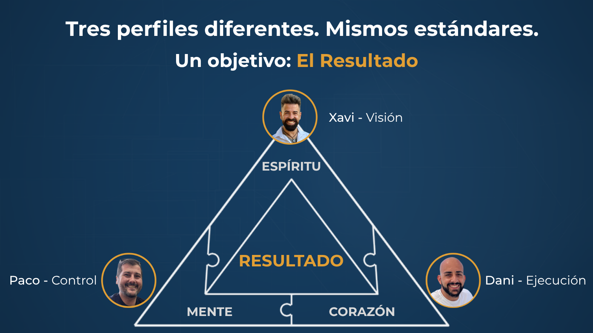
Visión, estrategia y salida a mercado. IA y automatización. Partner de IM·PULSO. Aquí: mercado, estructura de inversión y comunicación con partícipes.
Números, validación, fiscalidad y costes. "Veredicto antes de enamorarte": el control que protege el margen. En curso: 2 locales → 13 viviendas.
Dirección, jurídico-técnico y coordinación de obra con equipo propio. De la obra desde crío: "la obra no perdona" — la ejecuta quien la conoce por dentro.
Tres talentos distintos, un único objetivo: que el CdU llegue a resultado con seguridad.
El origen Esta oportunidad llegó por el canal inbruto de la Comunidad IN: la captó y trabajó un compañero del programa, nosotros compramos el inbruto y la ejecutamos. El circuito funciona.
Operaciones finalizadas y en marcha
Finalizadas
| Operación | Modalidad | Inversión | Rentabilidad | Anualizada | Hilo |
|---|---|---|---|---|---|
| Tríplex Crevillente (Alicante) 2025-26 | C/A/V | 149K € | ROI 24,1% · ROE 45,5% | 27,4% / 51,6% | briefing |
| Elche Torre-Quevedo · CdU 5 locales → viviendas | C/A/V | [dato] | VENDIDO | [dato] | — |
| Servicio CdU finalizadas: Castellón · Elda · Petrel | Servicio | — | — | — | — |
En marcha
| Operación | Modalidad | Estado |
|---|---|---|
| Las Torres de Cotillas (esta propuesta) | C/A/V · CCP | Viabilidad cerrada · licencia en trámite |
| Elche Juan Espuche 1 · CdU local → 3 viviendas | C/A/V | Análisis avanzado |
| 2 locales → 13 viviendas (Paco) | CdU | En ejecución |
El mercado, medido — no opinado
Triple validación del precio
Método Total (MTVV) con 4 inmobiliarias + 2 campañas de verificación real con ofertas recibidas + cruce con datos masivos y notariado (IM·PULSO). En su último contraste, el motor IM·PULSO replicó el resultado del método manual con un 1,3% de desviación (caso Elda: 74.000 € manual vs 75.000 € motor).
Y en esta operación: el motor IM·PULSO valoró las unidades de TDC en 68.000–69.000 € — en línea con los suelos del paso 4 (67.000–72.000 €). Tres vías independientes, un mismo rango.
La operación en 5 líneas: local en esquina de 105 m² en la mejor zona de Las Torres de Cotillas → 3 viviendas (1 dormitorio + 2 estudios). Inversión total 162.212 €. Venta realista validada por triple método: 205.000 € (67+67+71). Beneficio JV: 33.788 € tras retribución transparente del gestor. Todo el capital rinde igual: 20,92% — el del gestor (35.000 € dentro) y el de los inversores. Horizonte ~12 meses, todo certificado.
Dónde está — y por qué importa
| Punto de interés | Distancia |
|---|---|
| Parada de autobús | en la puerta |
| Mercadona · centro de salud · Ayuntamiento | a pie |
| Polígono industrial Molina de Segura | ~10 min |
| Universidad UCAM | ~10 min |
| Estación de ferrocarril | ~14 min |
| Murcia capital | 14 km (~15 min) |
| Arco Norte de Murcia (en licitación) | catalizador: mejora de conexiones del municipio |
El activo en imágenes
Estado original
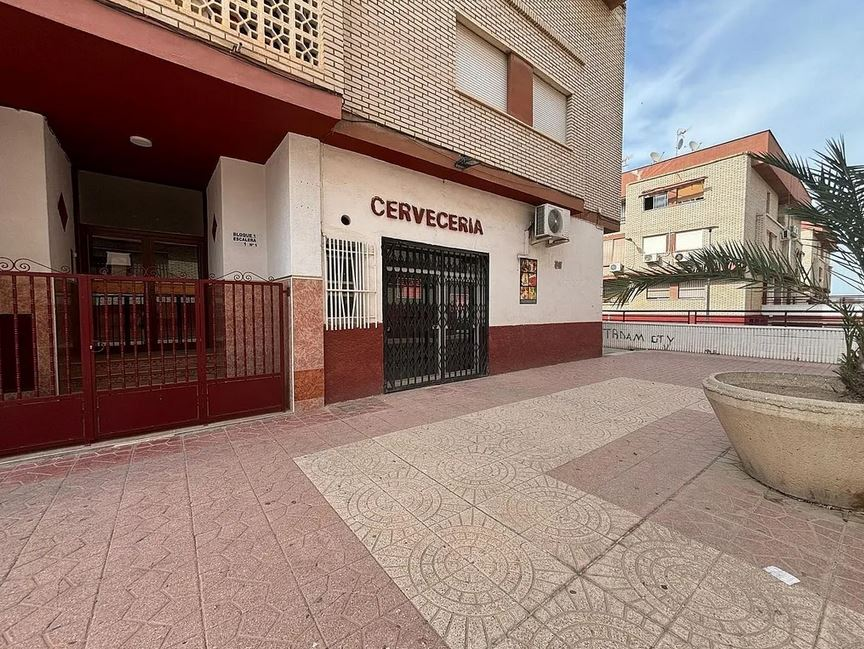
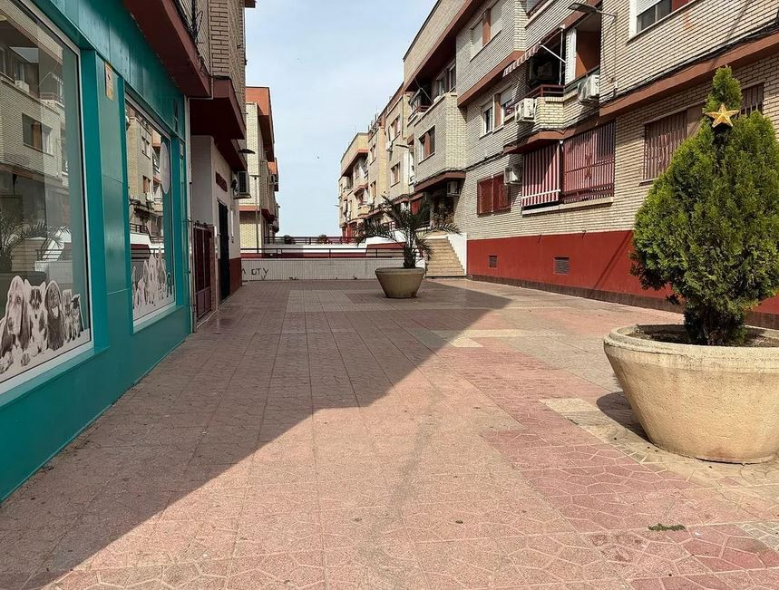
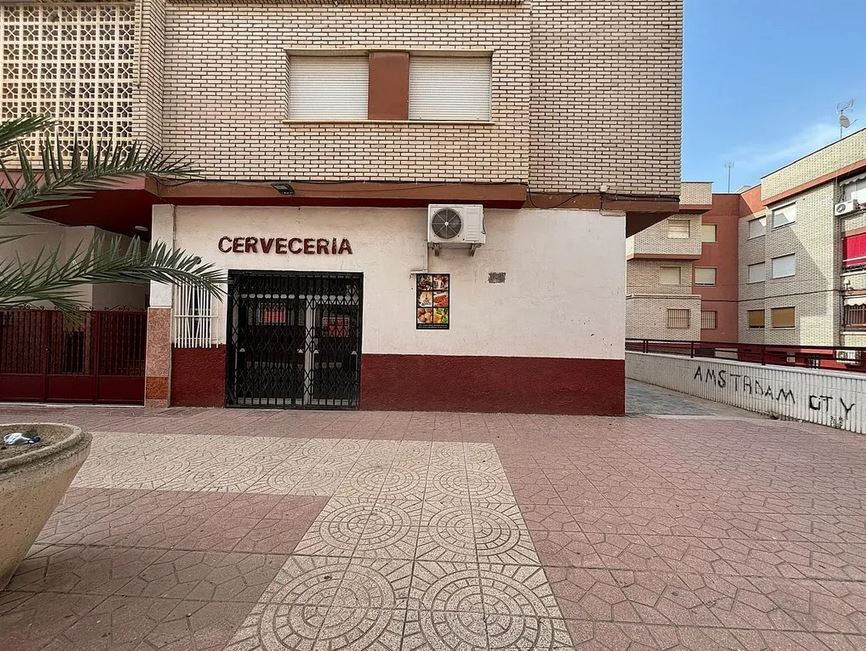
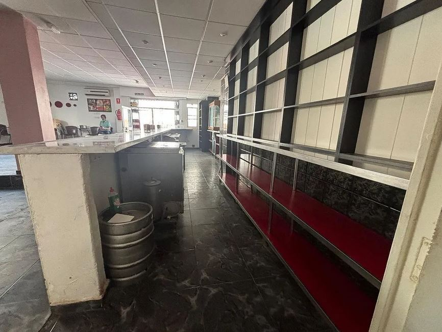
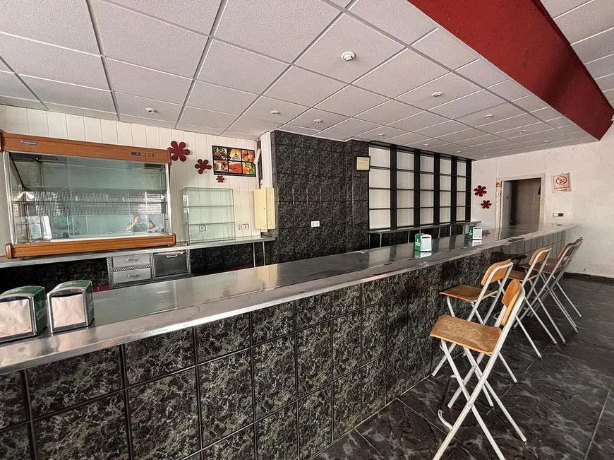
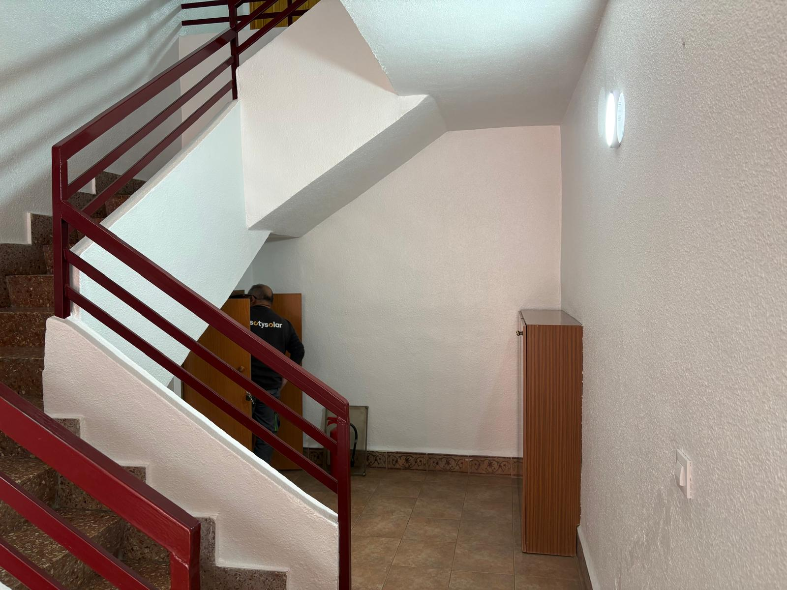
El producto final (visualización · piso piloto)
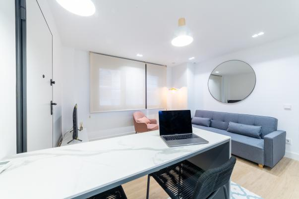
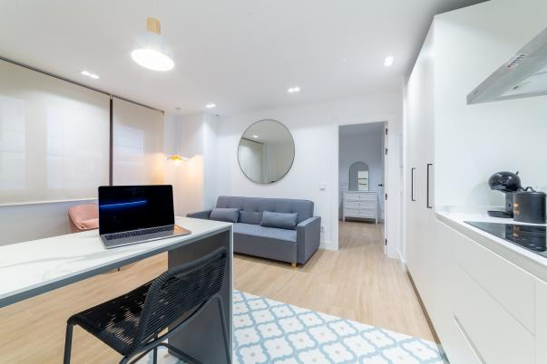
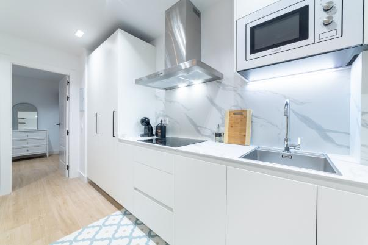
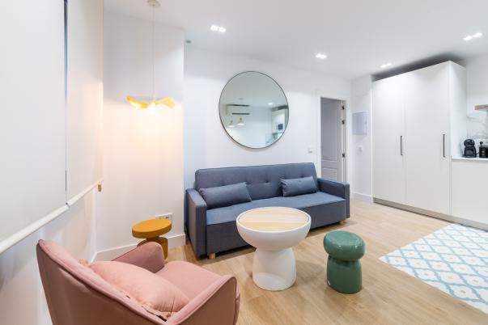
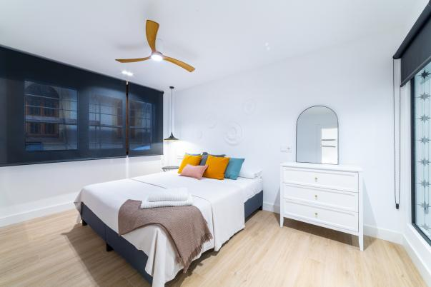
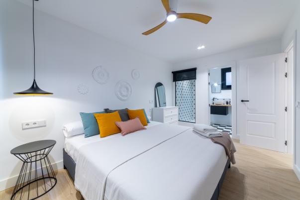
El problema — y cómo lo resolvemos
El problema: un municipio de 22.000 habitantes prácticamente sin oferta de vivienda compacta (3-5 pisos en portales) y un local en desuso que la comunidad no quiere como comercial.
La aportación de valor: cambio de uso y reforma integral para crear el producto que el mercado reclama y no existe: vivienda pequeña, reformada, equipada y lista para entrar — en la mejor zona del pueblo.
Cómo lo ejecutamos: con el mismo método de nuestro servicio. Lo veis en la siguiente sección — por dentro.
Rentabilidad con método, no con fe
El 70% de los cambios de uso fracasan o se encarecen respecto al presupuesto inicial. En CdU no gana el que más sabe: gana el que menos se equivoca. Por eso trabajamos con un sistema en formato escalera — GO → MAP → ÉXITO: decidir, planificar, ejecutar. El mismo que ofrecemos como servicio, y el que estáis viendo funcionar hoy:
- Tres patas — si una falla, todo falla: Normativa · Comunidad · Números
- Veredicto: GO / GO con ajustes / NO GO — y el porqué
- Viabilidad REAL antes de comprometer capital
- Sales con: veredicto + riesgos + próximo paso
- MAP convierte el "sí" en un plan: Ruta · Costes · Riesgos · Decisiones
- Ruta administrativa: pasos y orden real
- Presupuesto por partidas + contingencia + escenarios
- Un mapa que un técnico puede seguir sin inventarse nada
- De local a hogar: dirección, obra y cierre con control y calidad
- Comercialización en paralelo: renders, portales, inmobiliarias
- Reserva temprana → arras → notaría
- Control semanal y trazabilidad — reporting hasta liquidación
Los candados, abiertos — y por escrito
El PGMO prohíbe vivienda en PB en Ejes Comerciales — pero la fachada del local no recae sobre el eje, sino sobre espacio libre privativo. Uso residencial COMPATIBLE, certificado por el Ayuntamiento.
Certificado urbanístico nº 2025-0048 (27/11/2025)Estatutos (Regla 2): los locales de PB pueden dividirse y subdividirse sin consentimiento de los demás condueños. Además: autorización EXPRESA del presidente para convertir el local en "una o varias viviendas".
Estatutos finca 7949Autorización comunidad (09/12/2025)El Registro marcaba "VPO: SÍ" (expediente de 1975). Localizamos el expediente, tramitamos la consulta ante la Dirección General de Vivienda y obtuvimos certificado: el precio de venta es LIBRE (art. 27 RD 2960/1976).
Certificado DGV exp. CRT/000241/2026 (15/04/2026)Entrada con depósito condicionado a viabilidad (mero depositario) — la viabilidad se cerró ANTES de comprometer el capital. Arras y contrato preparatorio firmados.
Contrato de arrasContrato preparatorioEl proyecto: 3 viviendas que cumplen
Encaje validado en persona con el arquitecto municipal (reunión grabada). Salida de humos por fachada con filtros. Contadores desde el zaguán. Proyecto técnico firmado, visado y PRESENTADO — acuses de recibo del Ayuntamiento de 07/05 y 14/05.
Proyecto firmado (06/05/2026)Acuses de presentaciónAudio reunión arquitecto municipalEstado Licencia de obras en tramitación (~2 meses confirmados por el técnico municipal). Vía de inscripción amparada por estatutos.
Los números
| Partida | Importe (provisional — en cierre) |
|---|---|
| Compra del local | 40.000 € |
| ITP (7,75%) + notaría + registro + gestoría | ~4.000 € |
| Comisiones (inmobiliaria + cesión inbruto) | ~10.900 € |
| Proyecto, licencias, tasas, AJD, altas suministros | ~12.600 € |
| Reforma (3 presupuestos contrastados: 625–778 €/m² · cálculo prudente 710 €/m² + IVA) | ~90.200 € |
| CGP + contadores + gastos hasta venta + imprevistos | ~4.500 € |
| INVERSIÓN TOTAL DE LA OPERACIÓN | 162.212 € |
Tres escenarios — y un plan B
El escenario que contamos es el realista, sobre suelos validados tres veces: paso 4 de Antonio (67K), paso 4 de Paco (72K) e IM·PULSO (68-69K).
| Conservador | Realista (el que contamos) | Por encima del realista | |
|---|---|---|---|
| Quién compra | Solo demanda local, a precio suelo | Patrimonialista + 1ª residencia (perfiles ya detectados) | Alta demanda, compra al contado |
| Venta 3 unidades | 192.000 € | 205.000 € (67+67+71) | activa el bonus 70/30 |
| Plazo de venta | +meses | 30-60 días/unidad | semanas |
| Beneficio operación | ~29.800 € | 42.788 € | Lo vendido por encima del realista genera bonus, repartido 70/30 gestor-inversor: empujar el precio beneficia a ambos |
| Beneficio JV (tras servicer 9.000 €) | ~20.800 € | 33.788 € | |
| Rentabilidad del capital | ~12,8% | 20,92% |
Plan B — la red de seguridad: si la venta se alargara, el activo se sostiene en alquiler tradicional: 350-450 €/mes por unidad validados con 111 contactos → ~8-9% de rentabilidad neta anual. La operación tiene dos salidas: la venta es la principal; el alquiler, la red.
Los riesgos: los que había y cómo los cerramos
Esta operación tenía 3 riesgos serios cuando llegó: el VPO, el uso en planta baja y la comunidad. Los tres están cerrados — con certificado (ver sección de viabilidad). Lo que queda abierto es lo normal de cualquier obra, acotado y con responsable:
| Riesgo abierto | P×I | Mitigación |
|---|---|---|
| Humedades por capilaridad en solado | 6 · Bajo | Catas previas; impermeabilización desde forjado; estructura NO afectada (inspección) |
| Licencia: retraso o condiciones | 8 · Medio | Pre-validada con el técnico municipal; proyecto ya presentado; seguimiento activo |
| Sobrecoste en ejecución | 9 · Medio | Cálculo prudente (710 €/m² sobre 3 presupuestos); imprevistos; equipo de obra propia = reacción inmediata; cap +15% en CCP |
| CGP / Iberdrola (suministro) | 6 · Bajo | Expediente en gestión; coste acotado y provisionado; presupuesto de aguas en mano |
| Vía registral (segregación vs DH) | 6 · Bajo | Estatutos amparan división; consulta notaría+Registro en curso; ambas vías viables |
| Venta más lenta o por debajo de rango | 6 · Bajo | Triple validación con demanda real; venta en paralelo; plan B alquiler 8-9% neta |
DAFO de la operación
- Zona más cara del municipio
- Esquina, 20 m de fachada
- Viabilidad certificada (3 candados cerrados)
- Equipo con ejecución de obra propia
- Producto inexistente: primer mover
- Demanda probada 2 veces
- Arco Norte en licitación
- Escasez estructural de vivienda compacta
- Superficies reducidas (estudios)
- Sin testigos directos de producto similar
- Plazos administrativos (licencia en trámite)
- Sobrecostes de ejecución
- Financiación de algunos compradores (mitigado por precio absoluto bajo)
Obra: 16 semanas, planificadas capítulo a capítulo
Instalaciones solapadas con albañilería (meses 1-2) para comprimir plazo; acabados concentrados en el mes 4. Suministros: CGP en gestión con Iberdrola; presupuesto de aguas en mano.
Calendario estimado: licencia jul-ago 2026 → obra sep-dic 2026 → comercialización desde sep → cierre de ventas T1 2027.
Diagrama de Gantt (SPM, 11/05/2026)Presupuestos de suministrosVendemos mientras construimos
Triple suelo del precio: paso 4 de Antonio (67.000 €) · paso 4 de Paco (72.000 €) · motor IM·PULSO (68.000–69.000 €). El realista que presentamos está construido sobre el suelo, no sobre el deseo.
Posicionamiento: loft/estudio reformado, equipado y listo para entrar — precio accesible, escasez total, doble público (residencial + inversor patrimonialista con alquiler estimado 350-420 €/mes).
El método (probado en Crevillente): renders pre-obra + anuncio desde el arranque → reserva temprana → el comprador entra antes de acabar la obra. Canales: portales + inmobiliarias locales con compradores directos ya detectados.
Conclusiones estudio de mercado (paso 4 ampliado)Fichas MTVV 3 viviendasCómo entras — y cómo cobras
Modelo servicer sobre Cuentas en Participación (arts. 239-243 CCom): todo el capital rinde igual — el del gestor y el de los inversores, al mismo porcentaje (20,92% en el realista). Sin clases de capital, sin letra pequeña.
El partícipe: invierte, no gestiona, no aparece frente a terceros, y su riesgo queda limitado estrictamente a su aportación. El gestor: responde frente a terceros, fondos en cuenta exclusiva del proyecto, contabilidad separada, información periódica, derecho de auditoría externa, seguro RC.
Fiscalidad del partícipe: rendimiento del capital mobiliario (19-23%), retención 19% practicada por el gestor. Modelo de contrato CCP a disposición.
Tu cuadro de mandos — desde el día uno
📊 El visor del partícipe · HERRAMIENTA CdU DE 0 A ÉXITO
Todas nuestras operaciones se siguen así. No es un PDF que envejece: es la operación en vivo.
Acceso privado para partícipes. Demo en vivo durante la presentación.
Todo lo que habéis visto, a un clic
El Drive de la operación está organizado igual que el código de buenas prácticas de la comunidad — y queda abierto (lectura) para quien quiera estudiar la oportunidad a fondo:
| Carpeta | Contenido |
|---|---|
| 01 · Jurídico | Nota simple · estatutos · autorización comunidad · certificado VPO · catastro · escritura |
| 02 · Técnica | Diagnóstico Fase 1 · proyecto firmado · planos · audio arquitecto municipal · MTVV |
| 03 · Suministros | Aguas (presupuesto) · Iberdrola (expediente CGP) |
| 04 · Económica | Excel análisis · estudio de mercado · matriz de riesgos · Gantt · 3 presupuestos |
| 05 · Empresa | CIF · escritura SL · poderes · certificados AEAT/SS al corriente (renovando) |
| 06 · Inversión | Modelo CCP · estructura · escenarios de retorno · estrategia de salida |
Siguiente paso
Si quieres estudiarla: el Drive queda abierto. Si quieres entrar: hablamos 1 a 1 esta semana — los contratos de cuentas en participación se firman por orden de compromiso.
Primero claridad. Luego control. Y al final, resultado.